Last Updated: 2021-05-17
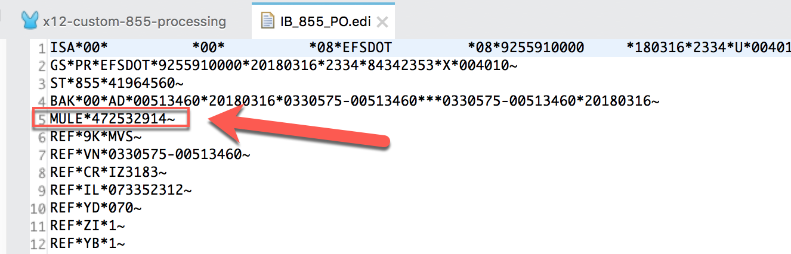
MuleSoft provides support for a large set of documents types for the Anypoint B2B. While it would be optimal that all customers and their partners stick to these document type standards, that is generally not the case. The Anypoint B2B Connectors use a YAML format called EDI Schema Language (ESL) to represent EDI schemas.
This codelab walks you through the process of adding a new segment to an EDI schema language file in MuleSoft. Specifically for an 855 document. In my example EDI 855 document, you can see there is a segment called MULE that is not standard in an 855 document. We'll copy and create a new *.esl file and add the definition for that new segment and it's corresponding elements.
This guide assumes you have working knowledge of Anypoint Studio and that you have the X12 EDI component installed and added to your Mule project canvas.
First determine the version and document type from the EDI file that you will be adding the new segment for. The version is the last element in the GS segment. The document type is the first element in the ST segment. In this case it is version 004010 and an 855 document.
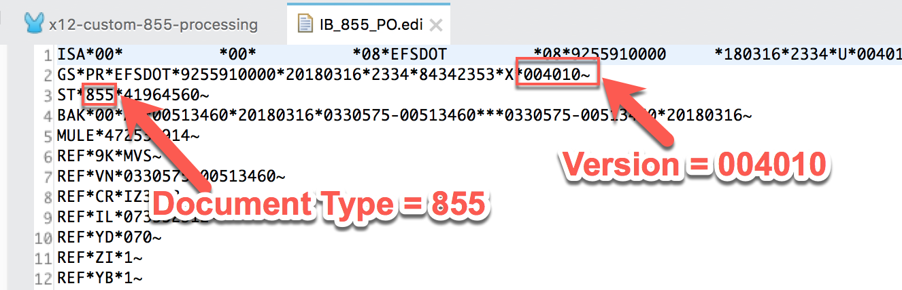
Next we need to grab the *.esl files and make a copy of those so we can modify them to match the custom EDI file. Within your Mule project, when you add the X12 EDI component, it adds the X12 EDI library to your project. The EDI libraries include the out-of-the-box schemas.
In the Package Explorer, expand that library and navigate to the following folder:
X12 EDI [v#.#.#] > x12-schemas-[v#.#.#].jar > x12 > [Version] > [Document Type]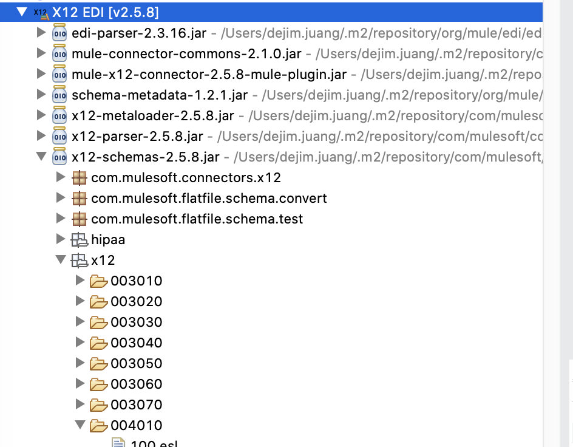
In this folder, for my example, I copy and paste two files: 855.esl and basedefs.esl from the 004010 folder to a new folder under src/main/resources called schemas.
To copy the file, the easiest way is to right-click on the file and select Copy
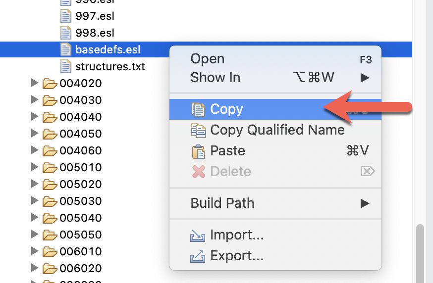
Under src/main/resources, create a new folder called schemas and paste the two files into that folder. It should look like the screenshot below.
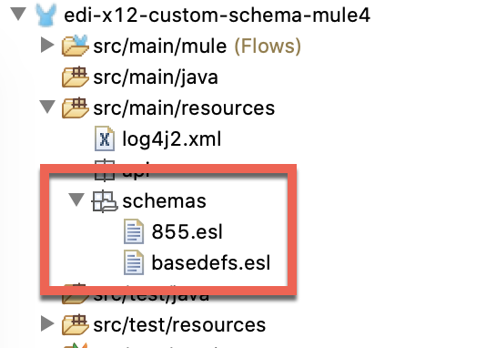
Now that we have the custom schema files ready, we can go and customize them to add new structures, segments, and elements.
Let's learn how to customize the schema files and add a new structure. We'll start with the X12 ESL file which is 855.esl
Open the 855.esl file that you just copied and modify the third line to change where the basedefs.esl file is located. Because the file is in the same folder, it should look like this:
imports: [‘basedefs.esl']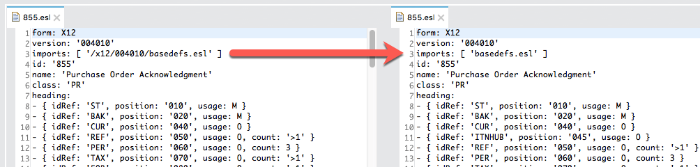
The screenshot above shows the version from the library on the left and what it should look like once you modify it on the right. We'll modify the basedefs.esl file in the next section.
Next we need to add a new line for the custom segment in the heading section of the message structure. In the EDI file, the new segment looks like the following:
MULE*472532914~So in the 855.esl file, we need to add a new line that looks like this in the heading section
- { idRef: 'MULE', position: '045', usage: O }I'll go through and describe what each parameter is used for and what they mean.
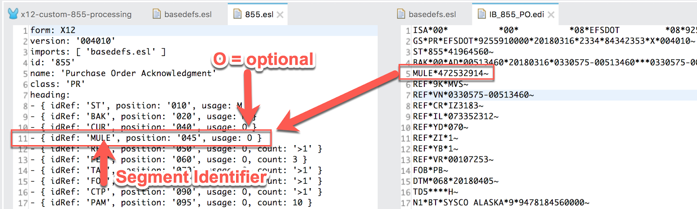
idRef | The idRef field matches the segment name which is |
position | The position is a numerical value that signifies the relation of this segment to the segments around it. In the EDI file, you can see that the preceding segment is BAK and the next segment is REF. 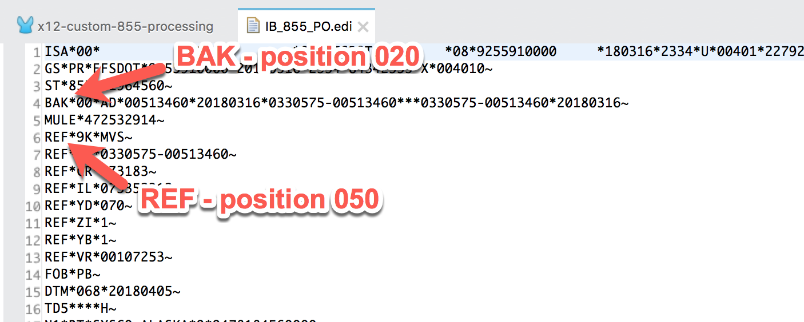 In the *.esl file, you can see there is a segment called CUR but that doesn't exist in the provided EDI file because it can be optional. So the position of the MULE segment needs to be between 020 and 050, but after 040. Therefore, it can be any number between 041 and 049 so we'll set it to 045.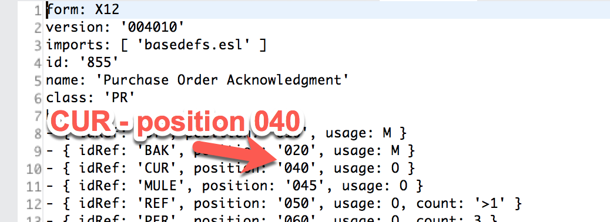 |
usage | I set the usage to ‘O' since this segment is optional. Here are some other options for that definition:
|
There are some additional tags that can be used. More information about those tags and the structure can be found by following this link.
Now that we've defined the structure, we need to go and define the segments and elements that make up the MULE segment in the basedefs.esl file. The basedefs.esl file provides the standard segment, composite, and element definitions shared among the *.esl files for a version.
We're going to add the following to the basedefs.esl file to the segments section:
- id: 'MULE'
name: 'MuleSoft ID'
values:
- { idRef: 'I65', usage: O }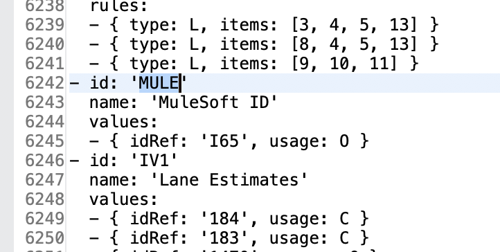
Let's break down the different parts.
id | The id corresponds to the segment that we're defining. In this lab, that is |
name | This is just the description of the segment. In this case, we set this to |
values | The values equal the number of elements after the segment in the EDI file. For the purposes of this codelab, we're just going to define one element. The idRef value here will correspond to the id that we define in the elements section. |
At the bottom of the basedefs.esl file, you can find the element definitions.
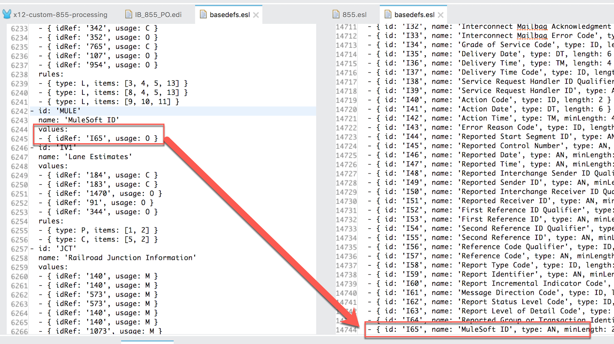
Let's add a new line for the single element that we're adding to the MULE segment. Paste the following line in the file.
- { id: 'I65', name: 'MuleSoft ID', type: AN, minLength: 2, maxLength: 9 }Below is a table that breaks down the different values we use in the element definition.
id | Set the id to be a unique value that doesn't match another other ids in the file. |
name | Name of the element. We'll use |
type | This is the value data type which we set to
|
minLength and maxLength | Additionally you need to set the min and max length of the element which is an alphanumeric string. In this case, the minimum length is 2 and the maximum length should be 9. 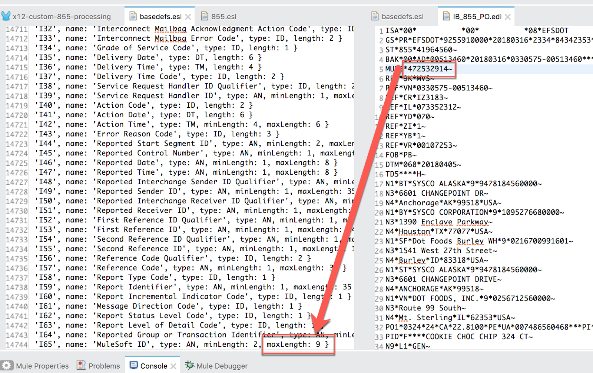 |
More information around defining segments and elements can be found at this link.
Once you setup the new *.esl files, you configure the X12 EDI components to reference the new schema files.
In Anypoint Studio, select the X12 Read component from your canvas and click on the configuration button for the Connector Configuration field.
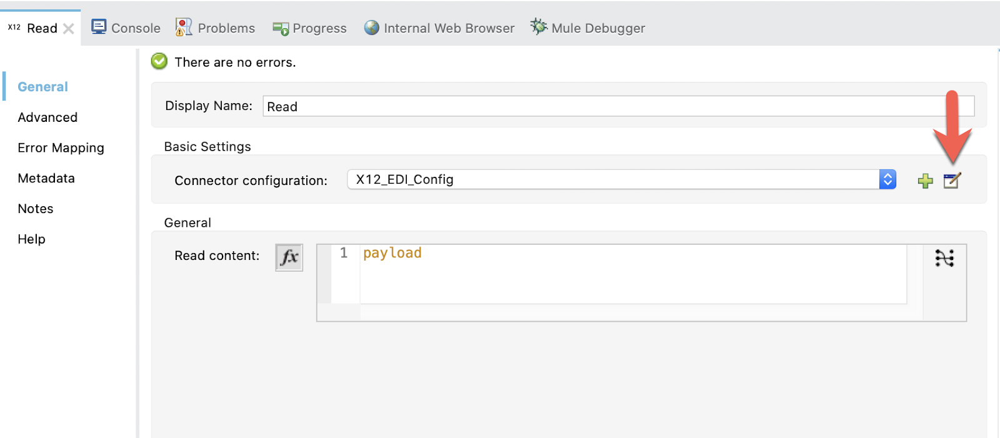
Make sure the Identity tab is filled in to match the EDI document identity values.
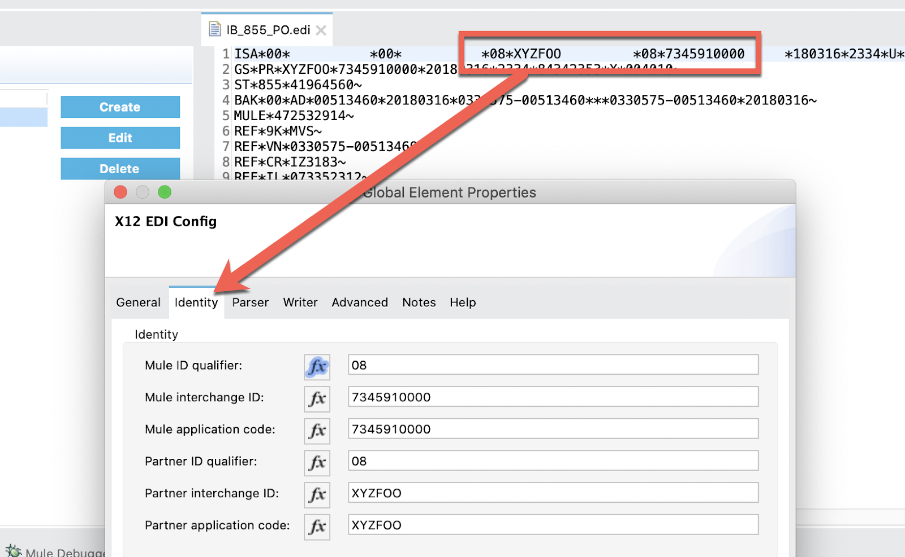
Back on the general tab, scroll down the the Document section, and change the Schema definitions drop-down to Edit inline and then click on the green plus sign to add the location of the 855.esl file.
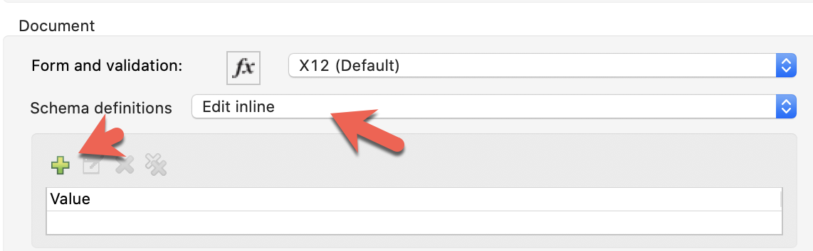
Paste in the following string into the Value field and click on Finish
${app.home}/schemas/855.esl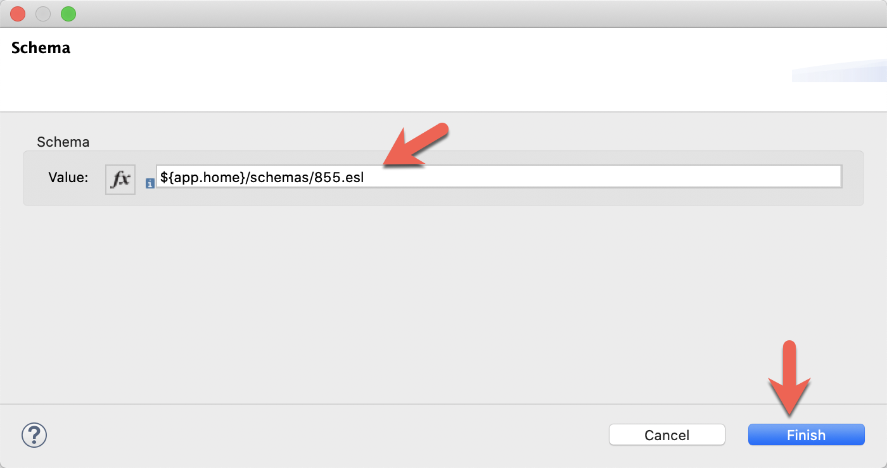
Back in the Global Element Properties, click on OK to close the dialog window. You don't need to point it at the basedefs.esl file because that is referenced directly from the 855.esl file.
I've included an example Mule XML configuration snippet below.
<x12:config name="X12_EDI_Config" doc:name="X12 EDI Config" groupIdSelf="7345910000" interchangeIdQualifierSelf="08"
interchangeIdSelf="7345910000" groupIdPartner="XYZFOO" interchangeIdPartner="XYZFOO" interchangeIdQualifierPartner="08">
<x12:schemas >
<x12:schema value="${app.home}/schemas/855.esl" />
</x12:schemas>
</x12:config>You may need some other settings to match your EDI file but that's all you have to do to add a new structure and segment to your ESL files.
The process of adding new segments and elements to the schema is relatively straightforward. Now that you have an understanding of how to modify an ESL file, you can easily make changes to your projects following the same methods.
With this approach, you have the flexibility of creating schemas for each partner to address their unique versions of a particular document type. This approach works for the following MuleSoft connectors:
Coupled with the power of DataWeave, you can easily read or write EDI files and apply complex transformations and business logic for your needs.